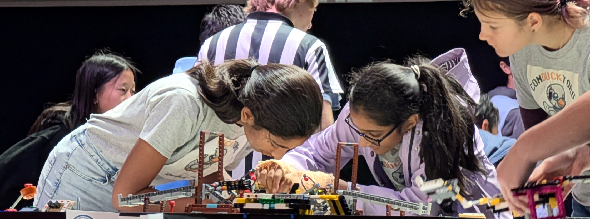

K
Kashvi S.
Mechanical Design Squad LeadKashvi is a 3-year veteran of FIRST Robotics. She loves science, animals, music, and basketball. She is also part of the school choir at Bernardo Heights Middle School.
Our team is organized into specialized squads. From CAD design to sponsor pitches, every squad interacts and works with each other to ensure a cohesive result. The robot is being built right now.

Owns the physical architecture: chassis, drivetrain, and manipulators. Builds 3D CAD assemblies in Onshape, evaluates mecanum vs. tank drives, and prototypes scoring mechanisms. Also produces the technical diagrams and CAD documentation for the Engineering Portfolio.
Kashvi is a 3-year veteran of FIRST Robotics. She loves science, animals, music, and basketball. She is also part of the school choir at Bernardo Heights Middle School.
Brings the robot to life: wiring, sensor mounting, battery management, and motor controllers. Handles physical assembly, color-coded wiring harnesses, IMU and odometry pod integration, and ensures every electrical connection is competition-ready.
Lots of experience with 3D printing and electricals. He is very good with computers and fun to work with.
Owns the first 30 seconds of every match. Programs AprilTag-based computer vision, IMU heading correction, odometry, and pathfinding (FTC RoadRunner). Scores points before a human ever touches the controller.
3-year robotics veteran. Very creative and artful, with a strong interest in human biology. Has a beautiful voice and is part of the school choir.
Owns the 2-minute TeleOp period. Programs custom gamepad mappings (asymmetric stick layouts, one-button score/intake macros), trains primary and backup drivers, and builds manual fallbacks for every macro. Speed and intent over fancy buttons.
A 3-year robotics veteran who loves video games. He has excellent piano skills and takes MMA classes.
Acts as the team's startup founders. Manages finances and budgets, raises funds for the team, leads sponsor pitches, and writes the Engineering Portfolio narrative. Most importantly drive the team through the season to be ready on the game day.
Extremely organized with excellent attention to detail. Very good at coding and drawing. Part of the Bernardo Heights Middle School leadership crew.
All of our roles interact and work with each other to ensure a cohesive result. The drivetrain doesn't matter without auto code. Auto code doesn't matter without a gamepad. The gamepad doesn't matter without sponsors paying for batteries. Sponsors don't matter without a robot to be proud of. The cycle is the work.